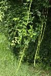

Common Name(s): Cat's Claw Creeper, yellow trumpet vine, catclaw trumpet, and funnel creeper.
Scientific Name: Dolichandra unguis cati (previously known as Macdadyena unguis cati)
Countries with the Cat's Claw Creeper is native to:
Argentina, Bahamas, Barbados, Belize, Bermuda, Bolivia, Brazil, Colombia, Costa Rica, Cuba, Dominican Republic, Ecuador, El Salvador, French Guiana, Grenada, Guadeloupe, Guyana, Haiti, Honduras, Jamaica, Mexico, Nicaragua, Panama, Paraguay, Peru, Puerto Rico, Saint Lucia, Suriname, Trinidad and Tobago, Uruguay, Venezuela, and the Virgin Islands
Countries that have the Cat's Claw Vine as an invasive species:
Australia, China, Cook Islands, French Polynesia, Greece, India, Indonesia, Italy, Kenya, Malaysis, Mauritius, Federated States of Micronesia, Nepal, New Caledonia, New Zealand, Niue, Saint Helena, Serbia and Montenegro, South Africa, Sri Lanka, Switzerland, Uganda, United States, Vanuatu, and Zimbabwe.
(Invasive Species Specialist Group, 2008)
The plant was originally brought to many countries as an ornamental becuase of the beautiful yellow flowers the cat's claw creeper has. Meaning the plant has been mainly transported deliberatly by people before knowing how invasive it could be.
For example, in Australia it was introduced as a garden plant, but then grew out into native forests and riparian areas in Australia (Department of Primary Industries).
The Cat's Claw Creeper is usually found in tropical dry forests or moist forests. It is very tolerant with the type of soils around them as well as very tolerant in low light situations. The Cat's Claw Creeper is a perennial and has a strong stem that grow higher than 20 meters intro tree canopies.
Credit: Niels Proctor, UF/IFAS
The plant has "hooked tendrils" (shown in the image above) that allows the vines to climb up trees. This causes a negative affect on the mature canopy trees. The plant takes sunlight and nutrients away from the trees, thus killing them.
Each of the fruits the plant produces gives off around 50 seeds each that are ideal for wind dispersal (Proctor and Smith). It has also been witnessed that "20% of seeds have been seen to produce two or three seedlings" (Invasive Species Specialist Group, 2008).
More invasive characteristics include the rapid growth of the plant, long lifespan, and how the plant needs little resources to survive. The Cat's Claw Creeper effects all layers of the forest ecosystem since it spreads in all directions. This Stress Tolerant plant can survive many disturbances (fires and frosts) and those disturbances may make the plant grow quicker as well. The Cat's Claw Creeper has an extensive root system and as talked about before it has a high seed production (Invasive Species Specialist Group, 2008). The photograph on above on the far right is of the root system. The round circles in the roots are the where the plant's energy reserves are which helps them survive disturbances better (Proctor and Smith, 2019).
References:
Department of Primary Industries. Cat's claw creeper (Dolichandra unguis-cati). NSW WeedWise. https://weeds.dpi.nsw.gov.au/Weeds/CatsClawCreeper.
Invasive Species Specialist Group. (2008, January 21). Macfadyena unguis-cati. Global Invasive Species Database. http://www.iucngisd.org/gisd/speciesname/Macfadyena+unguis-cati#.
Natural Resources Conservation Service. Native, Invasive, and Other Plant-Related Definitions | NRCS Connecticut. https://www.nrcs.usda.gov/wps/portal/nrcs/detail/ct/technical/ecoscience/invasive/?cid=nrcs142p2_011124.
Proctor, N., & Smith, J. (2019, April 29). Cat's-Claw Vine, Dolichandra unguis-cati?A Showy but Invasive Plant in Florida. EDIS New Publications RSS. https://edis.ifas.ufl.edu/fr391.